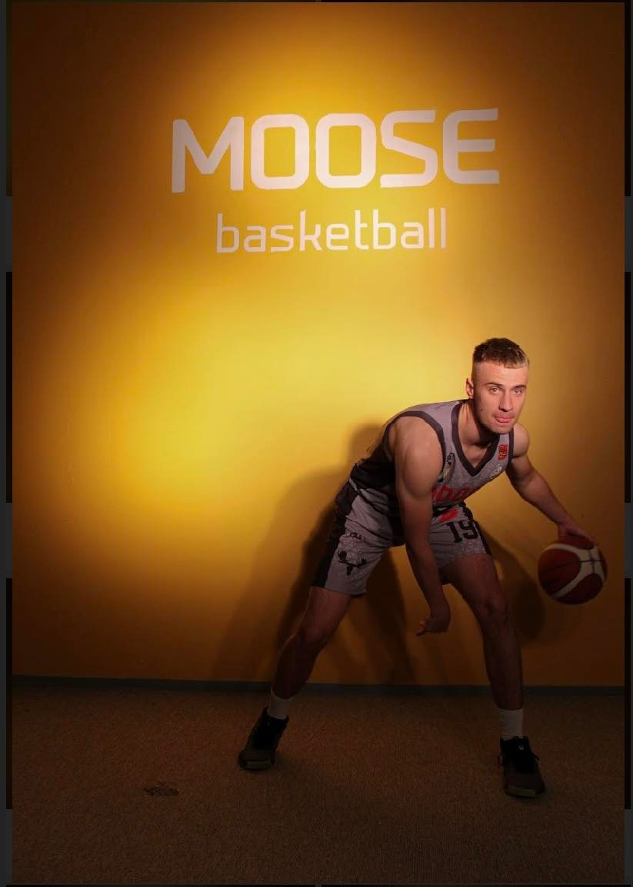

Hello World!
Nikita Sokolov is Contemporary Communication student at LCC International University in Klaipeda, Lithuania. Basketball is a sport that Nikita playing since 2nd grade. It lets Nikita express himself and gives a feeling of freedom. Energetic atmosphere in pictures, goes without saying. As you can notice in this portfolio, he loves to share his experience and his path. While studying in LCC International University, he developed himself as a creative individual. This website is made for you to learn more about Nikita and his passion.
